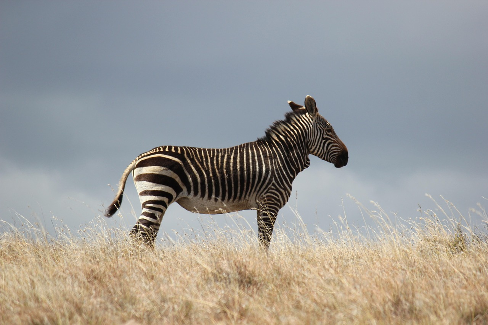
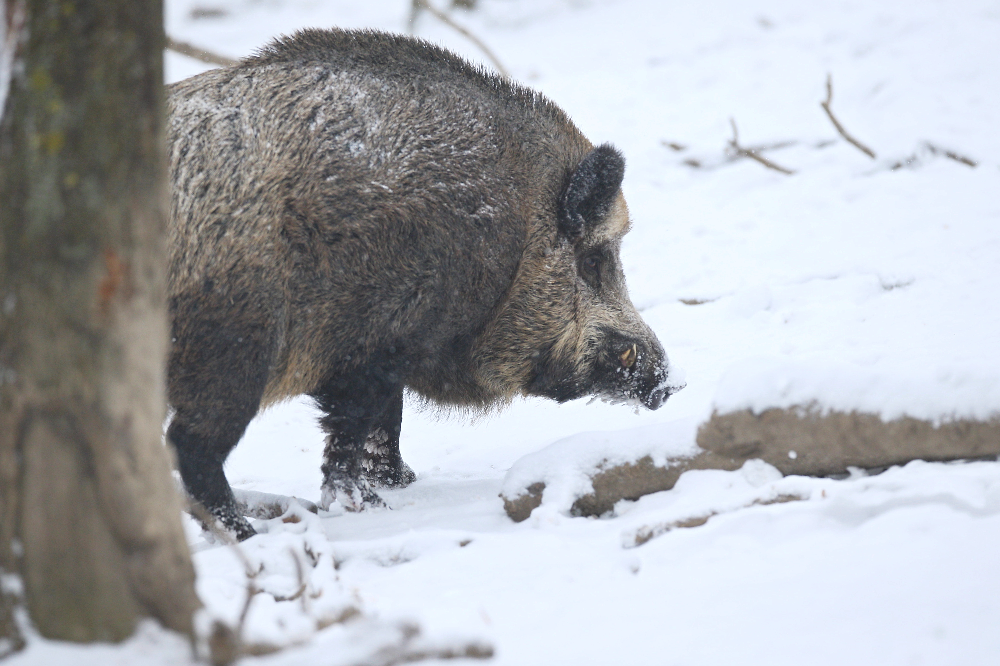

Zebra

Ssak z rodziny koniowatych charakteryzujący się obecnością białych pasów na czarnej sierści. Zwierzęta te należą do rodzaju koń (Equus)
Dzik

Gatunek dużego, lądowego ssaka łożyskowego z rodziny świniowatych (Suidae). Sus scrofa jest jedynym przedstawicielem dziko żyjących świniowatych w Europie. Jest także przodkiem świni domowej.